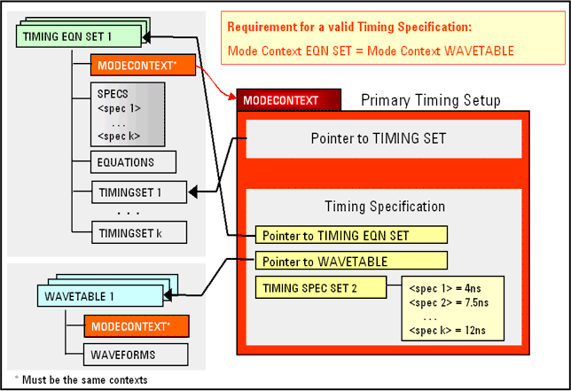
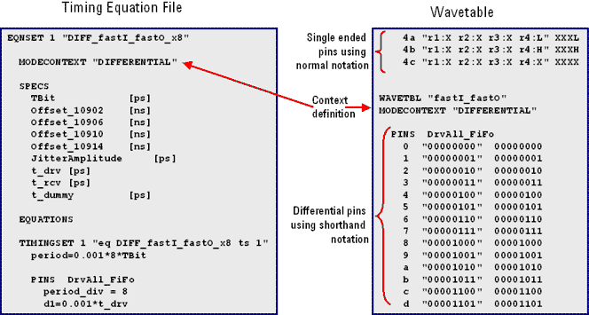
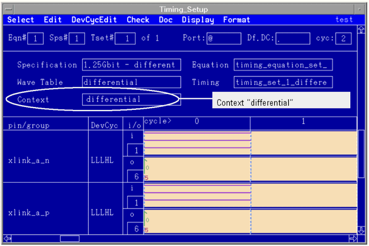

Mode context in timing setup
A mode context specifies, for every defined pin, the type (input or output or both) and operating mode. Every test is associated with a mode context, and every execution of the CONF command applies to exactly one mode context. If you use user defined mode contexts in the pin configuration and timing setup, you must also define the timing for these contexts.
The timing setup specifies mode contexts in the timing equation sets and in the wavetables. That is, every timing equation set and every wavetable is associated with a mode context.
The mode context attribute of the timing equation set (which must be identical to the mode context attribute of the base wavetable) determines the overall mode context of a primary timing setup (timing context) containing that equation set. In other words, the primary timing setup inherits the mode context of the associated timing equation set.
The figure below illustrates the structure of a primary timing setup:

Mode context "DEFAULT"
If you do not explicitly specify a mode context, the mode context "DEFAULT" is set.
The timing for the mode context "DEFAULT" is defined in:
- Timing equation set
- Timing set
- Wavetable
The timing equation set and the wavetable for the mode context "DEFAULT" define the timing for all pins with a mode = std (not FAST pins), that is for pins without any FAST specifics.
User defined mode context
As with the "DEFAULT" mode context, the timing for other mode contexts, including the pins in FAST mode, is defined in timing equation set, timing set, and wavetable.
Any arbitrary name can be used as a context name (except "DEFAULT"). In the example below, and several other places, "differential" is used.
Mode context definition in the timing setup
The mode context can be specified by keyword MODECONTEXT followed by the context name in quotes. This line must follow the line with the EQNSET keyword and is to be added to the timing equation set and the wavetable.
The figure below shows these entries. This figure also shows the shorthand notation for differential FAST mode pins in the wavetable.

A timing setup can be composed of many different timing equation sets and wavetables. Different timing equation sets can be assigned to different mode contexts and different wavetables can also be assigned to different mode contexts.
Note, however, that the wavetable and the timing equation set must be associated with the same mode context (timing context).
The mode context defined in the timing equation set is displayed in the Context field of the Timing Setup editor (see below).

Mode context in combination with multiport timing
EQNSET ... DEFINES ... MODECONTEXT "..." ...
Functional changes
- Introduced before SmarTest 6.3.2